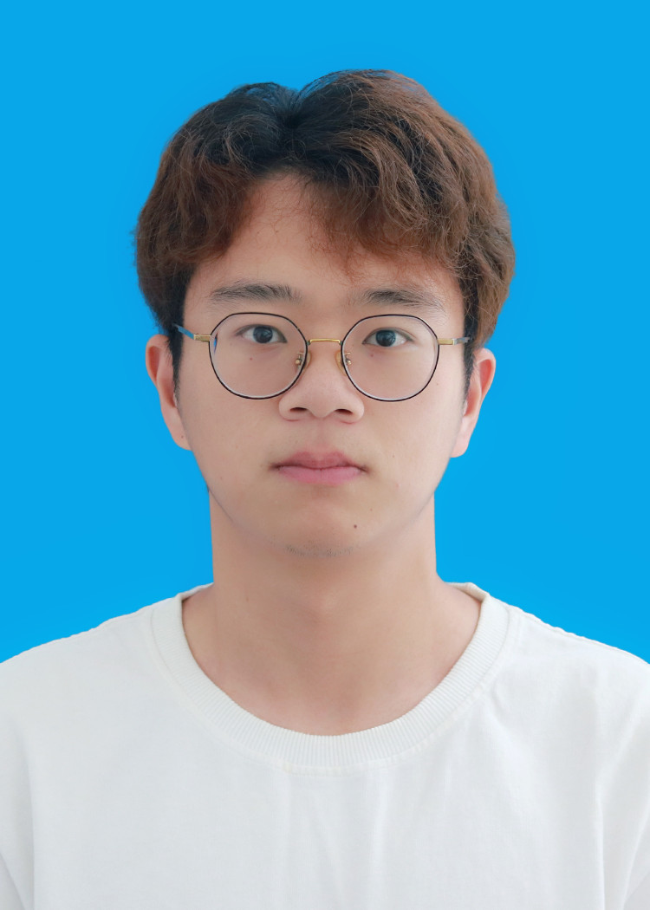
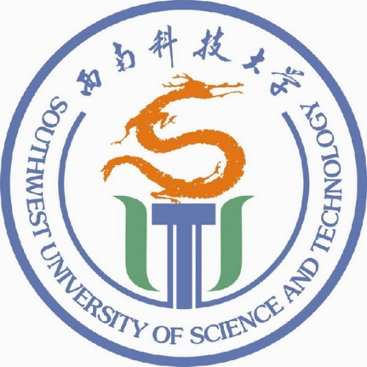
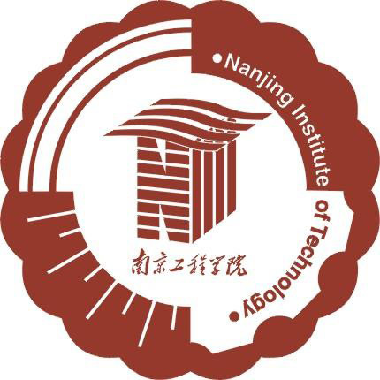

|  | 硕士研究生（在读） |
我目前在西南科技大学计算机学院攻读硕士学位，师从俞文心教授。 在此之前, 我于2020年6月在 南京工程学院 计算机工程学院 软件工程（卓越计划）专业获得了学士学位。
我的研究兴趣主要: 图像修复, 文字转图像, 风格迁移, 知识蒸馏, 视点合成 等。
|  | 硕士 西南科技大学 (2020.9 ~ 2023.7)
|
|  | 本科 南京工程学院 (2016.9 ~ 2020.7)
|
Image Inpainting with Semantic-aware Transformer
Shiyu Chen, Wenxin Yu, Qi Wang1, Jun Gong, Peng chen
Under Review
SCKD: Stage-Correlation Knowledge Distillation
Qi Wang, Lu Liu, Wenxin Yu1, Shiyu Chen, Jun Gong, Peng chen
Under Review
FPD: Feature Pyramid Knowledge Distillation
Qi Wang, Lu Liu, Wenxin Yu, Zhiqiang Zhang, Yuxin Liu, Shiyu Chen, Xuewen Zhang and Jun Gong
International Conference on Neural Information Processing (ICONIP), 2022. [CCF-C][PDF]
A Point Matching Strategy of 3D Loss Function for Single RGB Image Deep Mesh Reconstruction
Xin Deng, Ning Jiang, Shiyu Chen, Jiarui Cheng, Yefei Gao, Wenxin Yu
IEEE International Symposium on Circuits and Systems (ISCAS), 2022. [CCF-C][PDF]
SCAN: Spatial and Channel Attention Normalization For Image Inpainting
Shiyu Chen, Wenxin Yu, Liang Nie, Xuewen Zhang, Siyuan Li, Zhiqiang Zhang, Jun Gong
International Conference on Neural Information Processing (ICONIP), 2021. [CCF-C][PDF]
Semi-supervised Learning with Conditional GANs for Blind Generated Image Quality Assessment
Xuewen Zhang, Yunye Zhang, Wenxin Yu, Liang Nie, Zhiqiang Zhang, Shiyu Chen and Jun Gong
International Conference on Neural Information Processing (ICONIP), 2021. [CCF-C][PDF]
Free-Form Image Inpainting with Separable Gate Encoder-Decoder Network
Liang Nie, Wenxin Yu, Xuewen Zhang, Siyuan Li, Shiyu Chen, Zhiqiang Zhang, Jun Gong
International Conference on Neural Information Processing (ICONIP), 2021. [CCF-C][PDF]
Image Inpainting Based on Interactive Separation Network and Progressive Reconstruction Algorithm
Jun Gong, Siyuan Li, Shiyu Chen, Liang Nie, Xin Cheng, Zhiqiang Zhang, Wenxin Yu
2019 15th International Conference on Mobile Ad-Hoc and Sensor Networks (IEEE Access). [SCI iii][PDF]
Learning Convolutional Features and Text Information to Draw Image
Wenxin Yu, Shiyu Chen, Chang liu, Kang Xu, Zhiqiang Zhang
The 2nd International Conference on Computing and Data Science (CONF-CDS), 2021.[PDF]
一种基于特征交互的深度学习图像修复方法
俞文心; 李思源; 聂梁; 陈世宇; 高宇飞; 刘明金; 龚俊
国家发明专利, 公开号:CN113362239A
一种基于轻量级特征金字塔模型的图像修复方法
俞文心; 李思源; 聂梁; 陈世宇; 高宇飞; 刘明金; 龚俊
国家发明专利, 公开号:CN113362240A